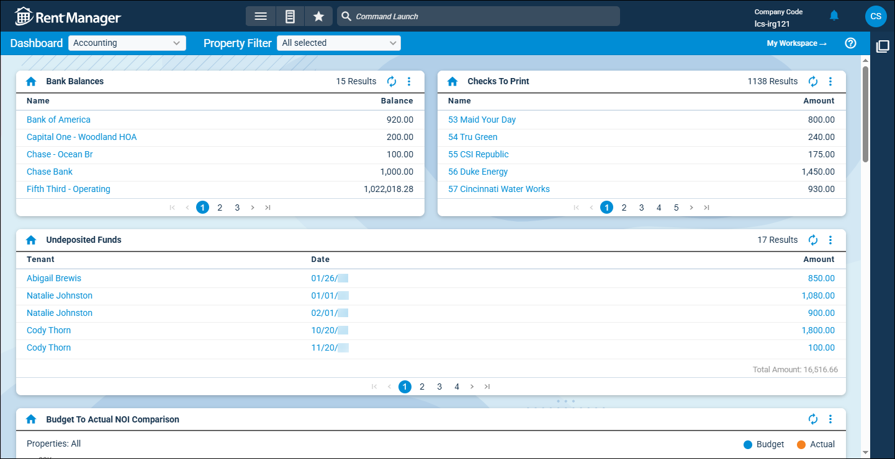

Source: https://rmxhelp.rentmanager.com/Topics/Express/KB/LP-DT-Accounting.htm
Accounting Dashboard Tiles
Rent Manager includes several dashboard tiles that provide at-a-glance data and analysis to help you track important accounting information in your portfolio. With these dashboard tiles, you can view the average revenue of your units over time, the status of your purchase orders, and payments that were received but not deposited in Rent Manager.

Add the following accounting-related tiles to your dashboard to help measure the results of your organization's economic activities:
| Dashboard Tile | Description |
|---|---|
|
Bank Balances |
The current balances in each bank account display. This tile helps you track the balance of your banks in Rent Manager. |
|
Budget To Actual NOI Comparison |
The budget net operating income (NOI) and the actual net operating income for the current month and the twelve previous months display. This tile helps you compare the budgeted net operating income for the according month or year with the actual net operating income for the according month or year. |
|
Checks To Print |
The name of the company or person to which the unprinted check is issued and the dollar amount of the unprinted check display. This tile helps you identify checks you have designated to be printed but have not yet printed from Rent Manager. |
|
Inventory Levels |
The inventory item name and the quantity of the item display. This helps you track how many inventory items you have on hand. |
|
Mgmt Company Profit Per Unit |
Calculates your net income divided by the total number of occupied and available units. This tile allows you to analyze your management company's average earnings for each unit over time. |
|
Mgmt Company Revenue Per Unit |
Calculates the management company's gross income divided by the number of total active units. This tile allows you to analyze the average revenue of your units over time. |
|
Profit & Loss MTD Trend |
A comparison of net income, either comparing the current month and months preceding or by comparing the current month with the same month in previous years, displays. This tile helps you understand the total amount of net income as of a specified period. |
|
Profit & Loss NOI Trend |
The total income, total expenses, and net operating income for the current month and the twelve previous months displays. This tile allows you to analyze your net operating income based on selected properties. |
|
Profit & Loss YTD Trend |
A comparison of net income on a cash basis for the current year to date with the same date in previous years displays. This tile allows you to analyze your net operating income based on selected properties. |
|
Purchase Orders Assigned To User |
The purchase orders' internally-generated number and status (Pending, Approved, Fulfilled, or Rejected) display. This tile is helpful, if you are managing multiple projects that require the purchasing of materials, in keeping track of the status of each purchase order that's involved. |
|
Purchase Orders Created By User |
The purchase orders' internally-generated number and status (Pending, Approved, Fulfilled, or Rejected) display. This tile is helpful in keeping track of the status of each purchase order that you have created. |
|
Undeposited Funds |
Tenant payments that were received but not deposited in Rent Manager display. This tile helps you identify payments that need to be deposited, ensuring your financial data in Rent Manager matches your real world finances. |